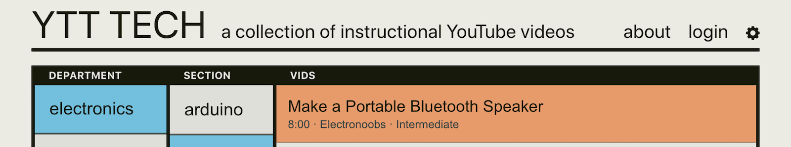
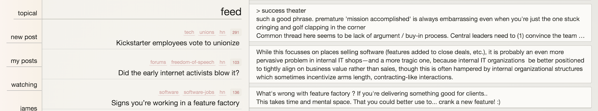
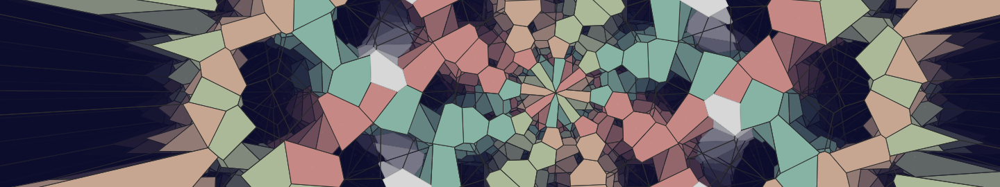
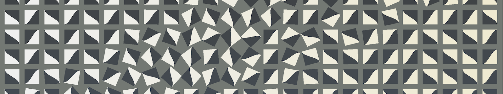
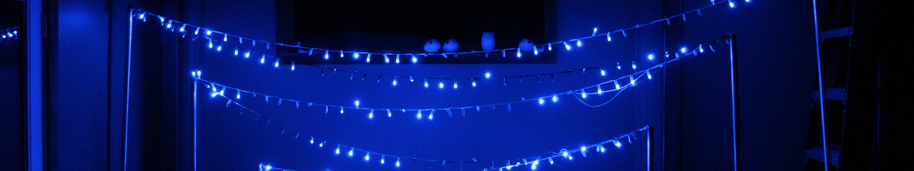
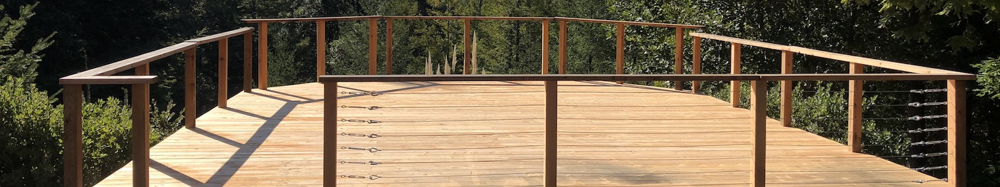

projects

YTT Tech
A website for viewing instructional YouTube videos. Designed to allow the user to
easily explore different areas of interest and dive into quality content. Users can submit
videos to be added to the collection. Made with React, AWS Lambda/SAM, DynamoDB.

Topical
An experimental discussion platform. Made with React, mobX, Node.js, Postgres. WIP.

Vrony
Animated Voronoi diagrams. Contains an interface to alter parameters and program sequences. Made with Processing.

Tiles - demo - source
A spinning tile visualization with custom control interface for creating a wide variety of interesting patterns. Made with p5.js.

Zigzag - video
LED installation with control box with knobs and buttons for modulating patterns. Made with Teensy, WS2812b LEDs, electrical conduit.
Tri pxl
Two triangular LED boxes with pattern sequencing system. Made with Arduino, WS21812b LEDs, plywood.

Deck
A large free-standing deck. Made with redwood, douglas fir, wire rope, turnbuckles.